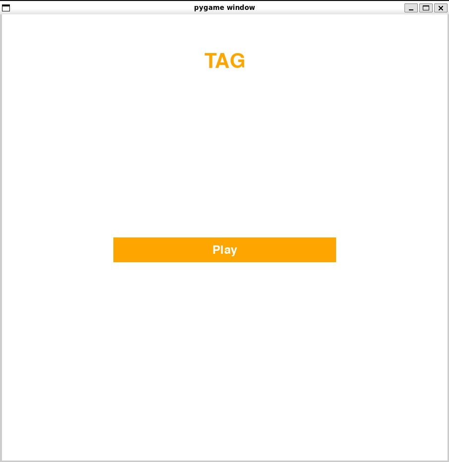
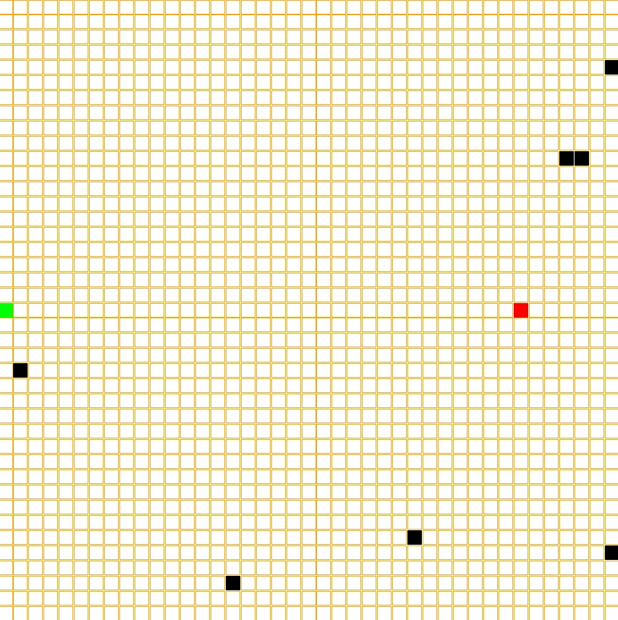

Tag Game
Tag
Description:
Background
This Was a class project turn personal project as I wasn’t really satisfied with the final result. I mostly made the game more visually appealing made it so you didn’t have to rerun the script anytime you died and fixed some bugs with the obstacles.
This project was mostly to explore pathfinding in algorithms. I wanted to explore the A* star algorithm in this case and I wanted to make a game that was similar to snake at least in presentation.
Struggles
Originally the game had no obstacles to run into outside the end of the board. This made it no only that A* was slow but also didn’t even come up with a better result than a simple greedy first algorithm. I then added in randomly appearing obstacles and for the most part a greedy algorithm was still better and faster on average. The problem with A* wasn’t that it couldn’t find a path but that it would stop the flow of the game to do it. So my compromise for this was to have the AI to change algorithms depending on the situation. I wanted to achieve two things with this first make it so A* has a purpose in this game as pretty much a final resort. But also I didn’t want to make it so the AI simply chased you so Instead I changed the greedy algorithm to go to the point the player is heading if it’s a certain distance away. It will also only use A* if the player isn’t moving. This made the AI more fun to play against while also allowing to handle certain edge cases better with A*.
Display
Title Screen

Board

This shows an early state of the game as the game continues more obstacles will appear which are the black squares.
Game play
Goal
You are the green square and your goal is to survive as long as possible and in turn earn as many points as possible.
You lose if the red square catches you
Controls
W: Go up A: Go left S: Go down D: Go right
If you’ve ever played snake it moves very similar where you go in the direction of key you press until you specify otherwise.
How it works
Board
The game generates a board of forty by forty with the starting location of the player being opposite of each other. Everything in this game is coordinate based and stores obstacles coordinates, player coordinates and enemy coordinates and changes the color of the associated square depending on those locations
tile_size = width / board_size
tile_origin = (0, 0)
tiles = []
for i in range(board_size):
row = []
for j in range(board_size):
rect = pygame.Rect(
tile_origin[0] + j * tile_size,
tile_origin[1] + i * tile_size,
tile_size,
tile_size,
)
if (i, j) == user.location:
# Draw Player character
pygame.draw.rect(screen, "green", rect)
elif (i, j) == enemy.location:
# Draw Enemy
pygame.draw.rect(screen, "red", rect)
elif (i, j) in obstacles:
# Draw Obstacle
pygame.draw.rect(screen, "black", rect)
else:
pygame.draw.rect(screen, "orange", rect, 1)
row.append(rect)
tiles.append(row)Player
The player is a class and is the simplest part of the program it has a location and direction.
- Location: Current location of player
- Direction: Direction player is currently moving
All the program does is respond to key presses and changes the direction and location accordingly.
class player:
def __init__(self, location: Tuple[int, int], direction: str | None):
self.location = location
self.direction = direction
def move_player(self, obstacles) -> bool:
"""Changes player coordinates depending on current direction."""
result = None
if self.direction == "Up" and self.location[0] > 0:
result = (self.location[0] - 1, self.location[1])
elif self.direction == "Down" and self.location[0] < 40:
result = (self.location[0] + 1, self.location[1])
elif self.direction == "Left" and self.location[1] > 0:
result = (self.location[0], self.location[1] - 1)
elif self.direction == "Right" and self.location[1] < 40:
result = (self.location[0], self.location[1] + 1)
if result != None and result not in obstacles:
self.location = result
return True
self.location = self.location
return FalseEnemy
The enemy is also a class similar to an enemy however it is much more complex and uses different algorithms to choose it’s next move depending on the location.
A* Algorithm
A* works by assigning a value to each possible moves based on how far away it is from the goal in this case we use manhattan distance which is just rise + run. It will make an estimate on how many moves it should take and will calculate it’s path based on that however if it runs into a move that would get it closer but is not possible due to some other factor it will recalculate and try the current move that as the lowest value.
def pathfinder(
self, obstacles, start: Tuple[int], goal: Tuple[int]
) -> Tuple[int, int]:
# A* pathfinding algorithm to find the best path from start to goal
if not Path(self.filename).exists() or Path(self.filename).stat().st_size == 0:
open_list = [] # List of nodes to explore
closed_list = set() # Set of explored nodes
start_node = Node(start, None, 0, self.distance_from_player(start, goal))
heapq.heappush(open_list, start_node) # Add the start node to the open list
while open_list:
current_node = heapq.heappop(
open_list
) # Get the node with the lowest f cost
if current_node.position == goal:
path = self.reconstruct_path(
current_node
) # Reconstruct path if goal is reached
with open(self.filename, "w") as fh:
for p in path:
fh.write(f"{p}\n") # Write path to file
break
closed_list.add(
current_node.position
) # Mark the current node as explored
neighbors = self.possible_moves(
current_node.position, obstacles
) # Get valid neighbors
for next_position in neighbors:
if next_position in closed_list:
continue # Skip if the neighbor has already been explored
assert (
next_position not in closed_list
) # Ensure neighbor is not in closed list
g_cost = current_node.g + 1 # Increment cost from the start
h_cost = self.distance_from_player(
next_position, goal
) # Heuristic cost
next_node = Node(next_position, current_node, g_cost, h_cost)
if self.add_to_open(open_list, next_node):
heapq.heappush(
open_list, next_node
) # Add to open list if it's a better pathGreedy Search
Greedy search is much simpler and is used most of the time in this program. All it does is check all the possible moves which at most is four at one time and if it gets closer to the player then it will do that and if theres multiple that get closer it will randomly choose one.
if self.location != goal: # If the enemy is not at the goal
for move in moves:
new_dist = self.distance_from_player(
move, goal
) # Calculate new distance to goal
if new_dist < current_distance:
current_distance = new_dist # Update current distance if closer
best_moves.add(move) # Add to best moves
else:
bad_moves.add(move) # Add to bad moves
# Choose the best move if available
if moving:
if best_moves:
self.location = random.choice(
list(best_moves)
) # Move to a best move
if os.path.exists(self.filename):
os.remove(self.filename) # Remove path file
return None
else:
black_list = self.location
self.location = random.choice(
list(bad_moves)
) # Move to a random bad move if no best options